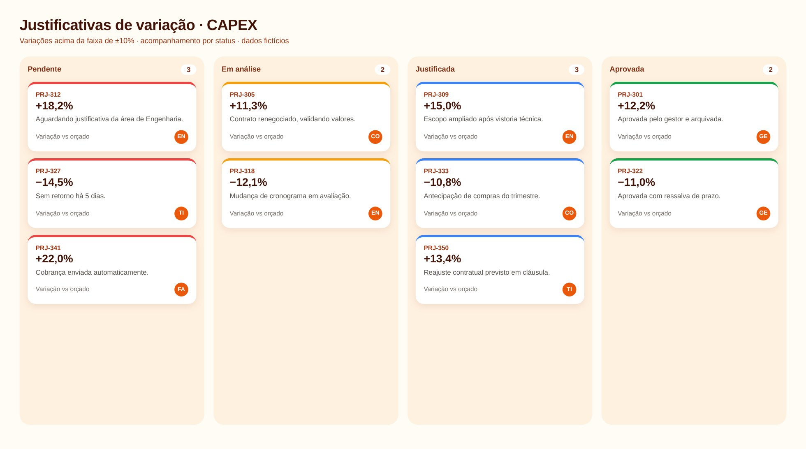

Lógica do negócio
Como funciona o processo
CAPEX é o investimento em ativos de longo prazo. Enquanto a obra está em andamento, o valor fica em imobilizado em curso. Quando o ativo entra em operação, é capitalizado e passa a ser depreciado. A gestão acompanha orçado × realizado e exige justificativa quando a variação passa de uma faixa de tolerância.
Regras que governam o processo
- Orçado × realizado × capitalizado por projeto
- Obras em andamento ficam em imobilizado em curso até a ativação
- Variação fora da faixa exige justificativa da área
- Justificativas pendentes são acompanhadas por área
Como resolvi com dados
Extração
Base de projetos com orçado, realizado e capitalizado.
Consolidação
Agrego por projeto, categoria e período, acumulado do ano.
Filtro de tolerância
Calculo a variação e separo o que ficou fora da faixa.
Justificativas
Gero a lista por área com campo para o motivo e o status.
Entrega
Waterfall do orçado ao realizado e quadro de justificativas.
Tecnologias utilizadas
Funcionalidades
IA aplicada neste projeto
Revisão das faixas de tolerância e cenários de variação positiva e negativa.

Miguel Vinicius Moura Martins
Defini a regra de negócio, modelei os dados, validei os números contra o processo manual e desenvolvi a ferramenta com apoio de IA.